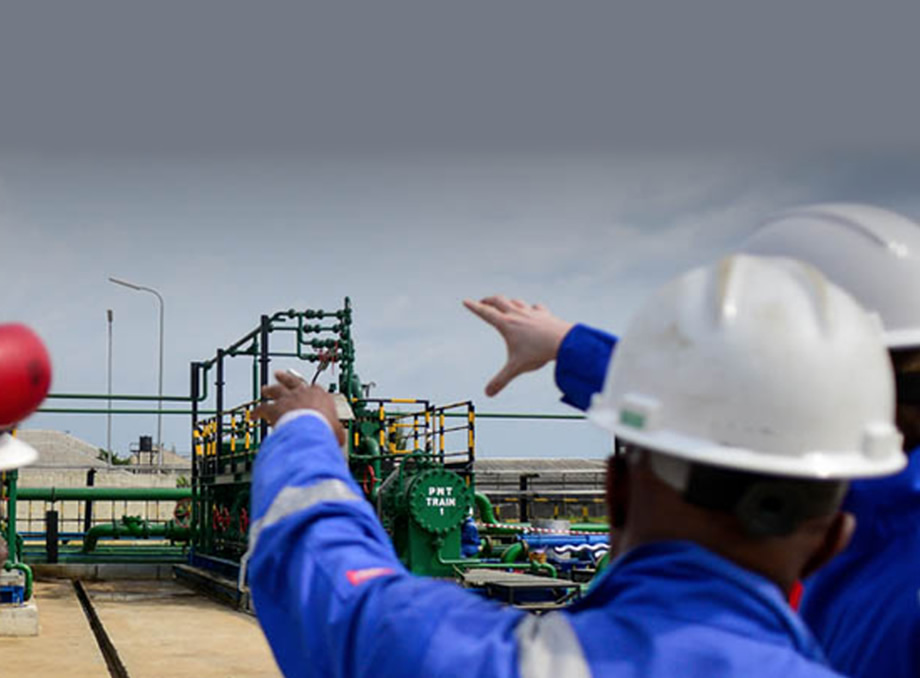

Quality Assurance
We source all petroleum products from certified depots, ensuring that our products meet national standards. Our quality assurance process is built on strict sourcing policies and partnerships with trusted, licensed suppliers. Every product is carefully selected to guarantee purity, consistency, and compliance with regulatory requirements. We conduct routine quality checks and verification procedures at various stages of procurement and delivery to ensure that all petroleum products maintain their integrity from source to final destination. This helps us prevent contamination and maintain product reliability. By upholding high quality standards, we provide our clients with confidence in the safety, performance, and efficiency of every product supplied, supporting their operations without compromise.